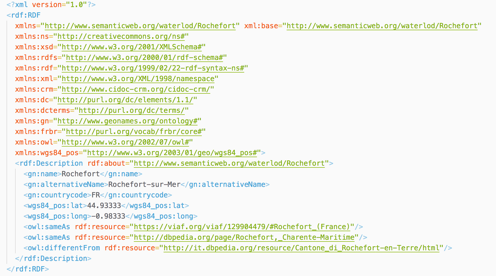
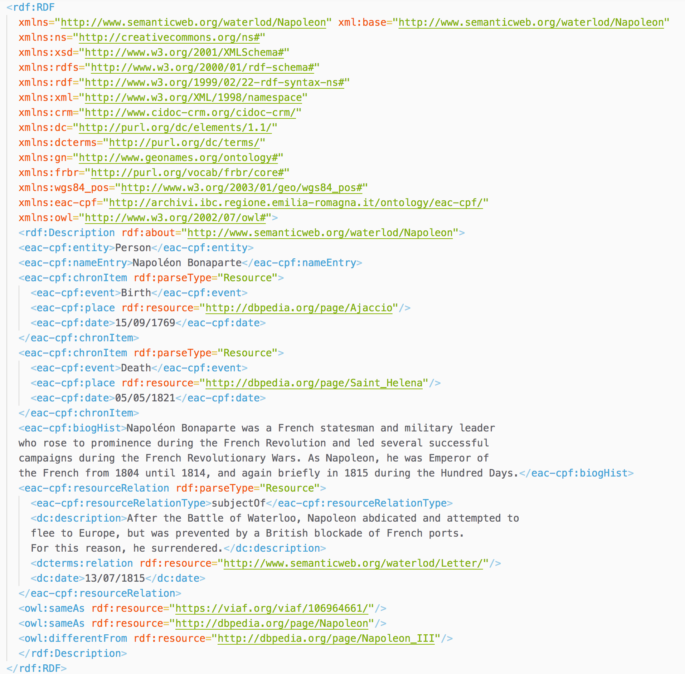
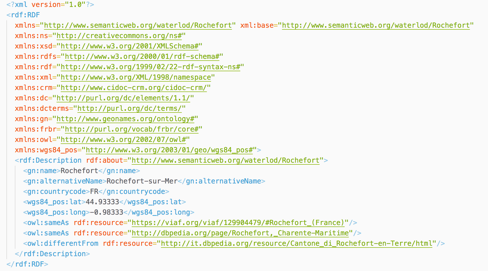

The following RDF/XML description is more complex: it describes the concept of surrender, directly related to the physical thing i.e. letter.

We have selected an idea from the Battle of Waterloo Wikipedia page. Our idea involves Napoleone Bonaparte as person, Waterloo as place, Defeat as concept and 1815 as Date.
In this section will be displayed the set of items that will be described following the LAM guidelines.
Rendigote et bicorne de Napoléon Ier, Artifact [Musée de l'Armée]
The Emperor Napoleon in His Study at the Tuileries, Painting [Google Arts & Culture / National Gallery of Art]
Plan de la bataille de Waterloo ou mont St-Jean. 18 juin 1815, Artifact [Gallica]
The Field of Waterloo, Painting [Google Arts & Culture / British Museum]
Cuirasse de carabinier Fauveau, Artifact [Musée de l'Armée]
Carte di Pasotti Francesco, Collection of texts [Archivio storico di Imola]
Europe after the Congress of Vienna, Artifact [Library of Congress]
Tagebuch vom Wiener Kongreß, Text [DEUTSCHEN NATIONALBIBLIOTHEK]
The 28th Regiment at Quatre Bras, Painting [Google Arts & Culture / National Gallery of Victoria]
In order to develop our theoretical model, the idea is to generate it starting from categories and question on them. The answers will be opportunely documentated with the right properties from the right ontologies in .
Here the main problem is to explicitly declare the different roles of a single person that, in turn, can be viewed as single person, family or corporate body. Anyway, a single "person" can be referred as "the creator", "the user" or "the owner" of an item. For these reasons we think that EAC-CPF and FOAF can be used for our purposes.
Our thoughs were start with FOAF: Friend Of A Friend Ontology, we have some useful properties to describe real people (eg: Napoleone Bonaparte) and some useful general information about the person. It answer to some basic questions like: "What is the gender?" and other questions that aim to get the personal information of a person. But in our case we need informations about entities, not only real person.
EAC-CPF, from the archival context, is very useful in order to differentiate the three main types of but the most important thing is the role that a person has in relation of the item. Using EAC-CPF we can overpass this lack and add a very useful information (eg: here the questions are "What is the role of this person, releated to the item?" or "Is this person the owner of the item? If yes, what kind of owner is it?"). So, the way is to use EAC-CPF.
In our model the idea of a place is quite simple. For our purposes we need just some minor information about a place to represent it with a name (or alternative names eg: Waterloo in French, Waterlô in Wallon ), a country (represented as a country code eg: IT for Italy, FR for France) and finally the couple of latitude and longitude. All of these needs can be handled using the GeoNames Ontology. The choice to use GeoNames is pushed mainly because it is more a De Facto standard.
For what concern the dates, the only question that we posed ourself is: "In which format I need to express the notion of time?". Starting from this point we posed another question i.e. "Do we need the notion of time? Or we just need the notion of date?".
Because our idea is cataloged under an historical theme, we do not care about the time, we can't even find the time on the web (eg we can't answer to the question "At what time in the morning the Battle of Waterloo has started?"), so our focus is just on dates. The format we need is defined by the w3Consortium under the Date and Time formats, and in particular the format DD/MM/YYYY proper of Italy.
Of course, our model has to describe the subject/concept proper of an item. Our mission, here, is to describe the item and the concept expressed by the item itself. We raised some questions on this matter, starting from "What is the name of the current object?", "What is the language is which it is described?", "What type of object is this?" or "What is the content/concept that is represented by means of this object?".
Some of these questions are general and fully handled with the Dublin Core Metadata Initiative. This standard is the most used because: it is the most functional, its properties are very general and it grants a very high level of abstraction. If we have to describe concepts, and we are unable to do it using Dublin Core (eg: the event associated to an item, because EDM can be both event or object centric) we have preferred the Europeana Data Model i.e. the standard proposed by Europeana itself. EDM, in turn, uses DC to extend its properties, because some of the EDM properties are sub-properties of the DC ones.
In this section, we present the conceptual model that has to answer the previous questions and then wrap data. For each type of class describable, here we define all the right properties, from the ontologies, filling up the following tables.
As we already describe in the theoretical model ( ) for answering the question we are going to use EAC-CPF. In the properties table will be used the namespace eac-cpf defined. A little note here: we need to add more information about the type of relations adding the description property given by Dublin Core (and the properties defined by DCTERMS).
xmlns:eac-cpf="http://archivi.ibc.regione.emilia-romagna.it/ontology/eac-cpf#"
xmlns:dc="http://dublincore.org/2012/06/14/dcelements"
xmlns:dcterms="http://purl.org/dc/terms/"In the following list, the meaning of each property is described:
eac-cpf:entity allows us to define what we are exactly describing (corporate body, person or family). This question makes our model adaptable to all situations.
The date is described in the format proposed by the w3 Consortium. In particular, for what concern our case, we opted for the following implementation: DD/MM/YYYY. This is the proper format used in Central and South Europe, in particular in Italy.
We choose to describe places with the GeoNames Ontology and the Basic Geo (WGS84 lat/long) Vocabulary. In fact, for answering at the questions we should define the following namespaces.
xmlns:gn="http://www.geonames.org/ontology#"
xmlns:wgs84_pos="http://www.w3.org/2003/01/geo/wgs84_pos#"| Question | Property |
|---|---|
|
What is the name? |
gn:name |
|
There are other names used to describe the place? |
gn:alternativeName [optional] |
|
How can we explicitly define the Country? |
gn:countryCode |
|
What is the latitude? |
wgs84_pos:lat |
|
What is the longitude? |
wgs84_pos:long |
For answering the questions raised during the theoretical model development we have used the DC, RDF(S), CIDOC-CRM and FOAF ontologies. defined as follows:
xmlns:rdfs="http://www.w3.org/2000/01/rdf-schema#" xmlns:rdf="http://www.w3.org/1999/02/22-rdf-syntax-ns#" xmlns:crm="http://www.cidoc-crm.org/cidoc-crm/" xmlns:dc="http://purl.org/dc/elements/1.1/" xmlns:foaf="http://xmlns.com/foaf/0.1/"
In this section we are going to describe some items, using natural language, using our model.
In this section,


The following RDF/XML description is more complex: it describes the concept of surrender, directly related to the physical thing i.e. letter.
Authority control of the name Waterloo in VIAF https://viaf.org/viaf/162695587/